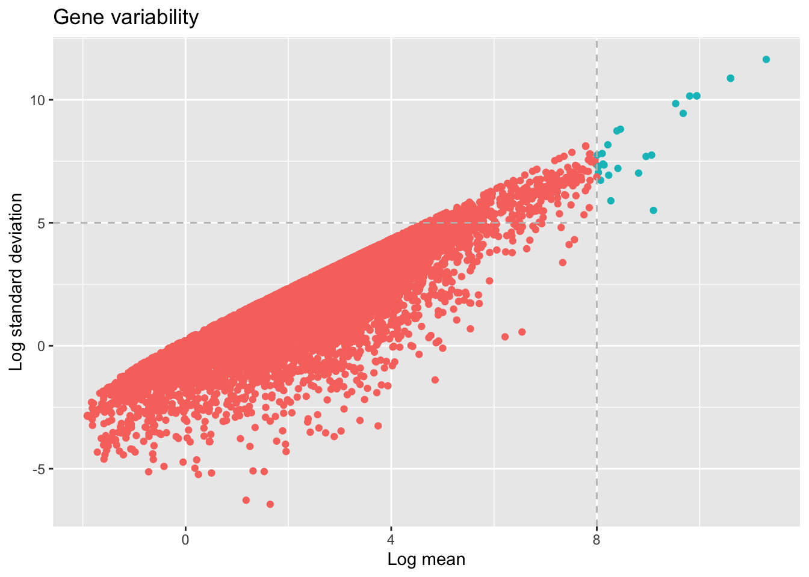
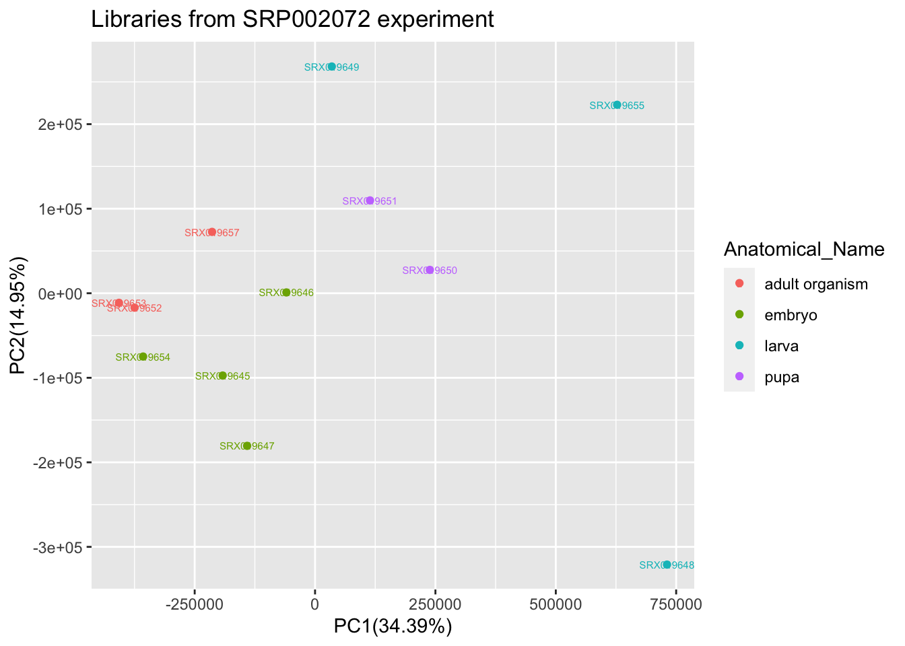

Processing data
Sara Fonseca Costa
Department of ecology and evolution, University of Lausanne & Swiss Institute of Bioinformatics, SwitzerlandApril 26, 2020
Last updated: 2020-04-26
Checks: 7 0
Knit directory: Bgee/
This reproducible R Markdown analysis was created with workflowr (version 1.6.1). The Checks tab describes the reproducibility checks that were applied when the results were created. The Past versions tab lists the development history.
Great! Since the R Markdown file has been committed to the Git repository, you know the exact version of the code that produced these results.
Great job! The global environment was empty. Objects defined in the global environment can affect the analysis in your R Markdown file in unknown ways. For reproduciblity it’s best to always run the code in an empty environment.
The command set.seed(20200417) was run prior to running the code in the R Markdown file. Setting a seed ensures that any results that rely on randomness, e.g. subsampling or permutations, are reproducible.
Great job! Recording the operating system, R version, and package versions is critical for reproducibility.
Nice! There were no cached chunks for this analysis, so you can be confident that you successfully produced the results during this run.
Great job! Using relative paths to the files within your workflowr project makes it easier to run your code on other machines.
Great! You are using Git for version control. Tracking code development and connecting the code version to the results is critical for reproducibility.
The results in this page were generated with repository version c287d01. See the Past versions tab to see a history of the changes made to the R Markdown and HTML files.
Note that you need to be careful to ensure that all relevant files for the analysis have been committed to Git prior to generating the results (you can use wflow_publish or wflow_git_commit). workflowr only checks the R Markdown file, but you know if there are other scripts or data files that it depends on. Below is the status of the Git repository when the results were generated:
Ignored files:
Ignored: .Rhistory
Untracked files:
Untracked: Drosophila_melanogaster_Bgee_14_1/
Untracked: analysis/.here
Untracked: release.tsv
Untracked: species_Bgee_14_1.tsv
Note that any generated files, e.g. HTML, png, CSS, etc., are not included in this status report because it is ok for generated content to have uncommitted changes.
These are the previous versions of the repository in which changes were made to the R Markdown (analysis/processdata.Rmd) and HTML (docs/processdata.html) files. If you’ve configured a remote Git repository (see ?wflow_git_remote), click on the hyperlinks in the table below to view the files as they were in that past version.
| File | Version | Author | Date | Message |
|---|---|---|---|---|
| Rmd | c287d01 | SFonsecaCosta | 2020-04-26 | Update |
| html | d99876e | SFonsecaCosta | 2020-04-22 | Build site. |
| Rmd | 5ebe080 | SFonsecaCosta | 2020-04-22 | add links sparql |
| html | ae29961 | SFonsecaCosta | 2020-04-22 | Build site. |
| Rmd | 9907294 | SFonsecaCosta | 2020-04-22 | clean text |
| html | 81cac69 | SFonsecaCosta | 2020-04-20 | Build site. |
| Rmd | 62f4a30 | SFonsecaCosta | 2020-04-20 | remove warnings |
| html | 8d9e88f | SFonsecaCosta | 2020-04-20 | Build site. |
| Rmd | f18beb5 | SFonsecaCosta | 2020-04-20 | Minor things |
| html | 3118c12 | SFonsecaCosta | 2020-04-20 | Build site. |
| Rmd | 4b9ee87 | SFonsecaCosta | 2020-04-20 | cache=FALSE |
| html | 8d821e2 | SFonsecaCosta | 2020-04-20 | Build site. |
| Rmd | 9073f83 | SFonsecaCosta | 2020-04-20 | add analysis |
Load the packages
library(BgeeDB)
library(ggplot2)
library(ggstatsplot)
library(varhandle)
library(here)Processing the data
When you collect data from Bgee database you can explore the data in multiple different ways to extract knowledge for your research.
For this part of the course (processing data) we will continue using the Drosophila melanogaster data. We will plot an overview of the all RNA-Seq data available for this species and then we go more narrow until the comparison between 2 samples that just differ by sex.
All RNA-Seq data
When we download/collect all data for a particular data type from Bgee you are working with processed data (e.g., TPMs for RNA-seq).
From this processed data you can plot for each sample, referent to each experiment, the distribution of relative expression values. In the graphic bellow we plot the boxplot of log2(TPM) for all libraries that are present in Bgee for RNA-Seq data in Drosophila melanogaster.
principalInfo <- c()
for (i in dataBgee_DM) {
collect <- i[c(1,2,4,5,7,9, 10,12,14)]
principalInfo <- rbind(principalInfo, collect)
}
ggplot(principalInfo, aes(x = Experiment.ID, y = log2(TPM))) +
geom_boxplot(aes(color = Library.ID), show.legend = FALSE) + xlab("Experiments") + ylab("Log2(TPM)") +
ggtitle("Libraries per experiments from RNA-Seq data")+
scale_color_viridis_d() +
theme(axis.text.x = element_text(angle = 45, hjust = 1))
| Version | Author | Date |
|---|---|---|
| 8d821e2 | SFonsecaCosta | 2020-04-20 |
You can also group the data by corresponding anatomical entities. Note that here a violin_plot can represent multiple samples if the libraries in same experiment belongs to same the anatomical entity.
ggplot(principalInfo, aes(x = Experiment.ID, y = log2(TPM), fill = Anatomical.entity.ID)) +
geom_violin() + xlab("Experiments") + ylab("Log2(TPM)") +
ggtitle("Experiments per anatomical entity")+
scale_color_viridis_d() +
theme(axis.text.x = element_text(angle = 45, hjust = 1))+ guides(colour = guide_legend(override.aes = list(size=1)))
| Version | Author | Date |
|---|---|---|
| 8d821e2 | SFonsecaCosta | 2020-04-20 |
Per experiment
Using as an example in the course, we will focus on the experiment retrieved in the section Extract Information, this means the experimentId SRP002072.
By plotting the data (just to visualize) you should be able to find the samples that belongs to the same anatomical entity and developmental stage for this experiment.
experiment_SRP002072 <- dplyr::filter(principalInfo, Experiment.ID == "SRP002072")
## remove useless columns in this case Experiment.ID = SRP002072 and Strain = NA
experiment_SRP002072[1] <- NULL
experiment_SRP002072[6] <- NULL
ggplot(experiment_SRP002072, aes(x = Library.ID, y = log2(TPM))) +
geom_violin(aes(fill = Anatomical.entity.ID, col = Stage.ID)) + xlab("Libraries") + ylab("Log2(TPM)") +
ggtitle("Experiment SRP002072")+
scale_color_viridis_d() +
theme(axis.text.x = element_text(angle = 45, hjust = 1))+ guides(colour = guide_legend(override.aes = list(size=1)))
| Version | Author | Date |
|---|---|---|
| 8d821e2 | SFonsecaCosta | 2020-04-20 |
From this experiment we can collect samples from the same anatomical entity and same developmental stage. Now we will search which samples from this experiment differ by sex.
sexInfo <- c("male", "female")
libInfo <- dplyr::filter(experiment_SRP002072, Sex %in% sexInfo)
cat(unique(libInfo$Library.ID))From our filtering we know that the samples retrieved as unique have the same anatomical entity and same developmental stage but they differ in sex. Just verify how they correlate in overall (relative expression - TPM).
## extract just fundamental columns to make a reformated data.frame
libInfo <- libInfo[c(1,2,6)]
## reformat the data
reshapeTable <- reshape(libInfo, direction='wide',idvar='Library.ID', timevar='Gene.ID')
reshapeTable <- t(reshapeTable)[-c(1),]
finalTable <- data.frame(as.numeric(reshapeTable[,1]), as.numeric(reshapeTable[,2]))
colnames(finalTable) <- c("SRX019652", "SRX019653")
finalTable <- log(finalTable)
finalTable <- as.matrix(finalTable)
finalTable <- finalTable[!rowSums(!is.finite(finalTable)),]
finalTable <- as.data.frame(finalTable)
ggstatsplot::ggscatterstats(
data = finalTable,
x = SRX019652,
y = SRX019653,
xlab = "SRX019652 (F)",
ylab = "SRX019653 (M)",
title = "Correlation between samples from same experiment",
messages = FALSE
)
| Version | Author | Date |
|---|---|---|
| 8d821e2 | SFonsecaCosta | 2020-04-20 |
Note that until this moment we are working and ploting the relative expression values of the genes across libraries, but this doens’t mean that all of this genes were classified in Bgee database as present.
Using the same libraries that were used to make the correlation plot, we can explore the gene variability between this two samples by using just the genes that were classified by Bgee database as present.
experiment_SRX019652 <- dplyr::filter(principalInfo, Experiment.ID == "SRP002072" & Library.ID == "SRX019652" & Detection.flag == "present")
experiment_SRX019652 <- experiment_SRX019652[c(3,8)]
colnames(experiment_SRX019652) <- c("Gene.ID", "TPM_SRX019652")
experiment_SRX019653 <- dplyr::filter(principalInfo, Experiment.ID == "SRP002072" & Library.ID == "SRX019653"& Detection.flag == "present")
experiment_SRX019653 <- experiment_SRX019653[c(3,8)]
colnames(experiment_SRX019653) <- c("Gene.ID", "TPM_SRX019653")
mergeLibs <- merge(experiment_SRX019652, experiment_SRX019653, by = "Gene.ID")
mergeLibs$meanSamples <- apply(mergeLibs[,2:3], 1, mean)
mergeLibs$sdSamples <- apply(mergeLibs[,2:3], 1, sd)
ggplot(mergeLibs, aes(x=log(meanSamples), y=log(sdSamples)))+
geom_point(aes(color= ifelse(log(meanSamples)>8, "red", "blue")))+ labs(title="Gene variability",
x ="Log mean", y = "Log standard deviation")+ theme(legend.position = "none")+
geom_vline(xintercept = 8, col="gray",linetype = "dashed")+geom_hline(yintercept = 5, col="gray",linetype = "dashed")
selectGenesDM <- dplyr::filter(mergeLibs, log(mergeLibs$meanSamples) > 8 & log(mergeLibs$sdSamples) > 5)
write.table(selectGenesDM$Gene.ID, file = here("genes_Drosophila_melanogaster.tsv"), sep="\t", col.names = FALSE, row.names = FALSE)
head(selectGenesDM)From our analysis we can detected that 26 genes present high variability between the two samples. This list of the genes can be used in analysis as TopAnat to verify if they enrich to specific target anatomical terms.
As summary, from this small analysis you were able to use the Bgee processed data to perform downstream analysis, such as correlation analysis or gene varialibility discovery across samples. But with bgee data you can do even more such as clustering or differential expression (DE) analysis. Normally for downstream analysis as DE the stand-alone tools expect counts as input, this information you can retrieve to all samples when you use the getData() function.
In order to get an overview of the entire experiment SRP002072 from where you collect the two sample above, perform a principal component analysis (PCA) for all libraries that belongs to this particular experiment using the raw counts. Note this can be done already with normalized values (TPM or FPKM).
## collect raw counts for each library
principalInfo_raw <- c()
for (i in dataBgee_DM) {
collect <- i[c(1,2,4,5,7,9, 10,11,14)]
principalInfo_raw <- rbind(principalInfo_raw, collect)
}
## just present in bgee
experiment_SRP002072 <- dplyr::filter(principalInfo_raw, Experiment.ID == "SRP002072" & Detection.flag == "present")
libInfoData <- experiment_SRP002072[c(2,3,8,9)]
libInfoPresent <- libInfoData[c(1,2,3)]
reshapeTablePresentRaw <- reshape(libInfoPresent, direction='wide',idvar='Library.ID', timevar='Gene.ID')
allTablePresentRaw <- t(reshapeTablePresentRaw)
## clean data after transformation
colnames(allTablePresentRaw) <- NULL
colnames(allTablePresentRaw) <- allTablePresentRaw[1,]
allTablePresentRaw <- allTablePresentRaw[-1,]
allTablePresentRaw <- data.frame(allTablePresentRaw[,1:12])
allTablePresentRaw <- unfactor(allTablePresentRaw[,1:12])
## remove rows with NA
finalTableRaw <- na.omit(allTablePresentRaw)
## prepare final table to PCA
finalTableRaw <- t(finalTableRaw)
raw_pca <- prcomp(finalTableRaw)
percentage <- round(raw_pca$sdev / sum(raw_pca$sdev) * 100, 2)
percentage <- paste0(colnames(raw_pca$x), "(", as.character(percentage), "%)")
raw_pca <- as.data.frame(raw_pca$x)
raw_pca$Anatomical_Name <- c("embryo","embryo","embryo","embryo","larva","larva","larva", "pupa","pupa" ,"adult organism","adult organism","adult organism")
p<-ggplot(raw_pca,aes(x=PC1,y=PC2,color=Anatomical_Name, label = rownames(raw_pca) ))
p<-p+geom_point()+ xlab(percentage[1]) + ylab(percentage[2])+geom_text(size=2)+labs(title="Libraries from SRP002072 experiment")
p
Cross annotation with processed data
After having explored the processed data from Bgee we can still cross information from the annotation with processed data. From the output provided by the getAnnotation() function we can verify the amount of protein coding genes present, as well as other informations for each sample (e.g., genic region present per sample or percentage of intergenic present).
samplesId <- c(unique(libInfo$Library.ID))
infoLib <- dplyr::filter(annotation_DrosMelRNASeq$sample.annotation, Library.ID %in% samplesId)
ggplot(infoLib, aes(x = Library.ID, y = Protein.coding.genes.percent.present)) +
geom_point() + ylim(0, 100) + xlab("Libraries") + ylab("% Protein coding") +
ggtitle("Selected samples - SRX019652 (F) & SRX019653 (M)")
| Version | Author | Date |
|---|---|---|
| 8d821e2 | SFonsecaCosta | 2020-04-20 |
Protein coding (All samples)
In the aforementioned graph, we just plotted the 2 samples from our narrow analysis.
In order to get an overview of the % of protein coding genes for all samples from Drosophila melanogaster we should make a general plot.
ggplot(annotation_DrosMelRNASeq$sample.annotation, aes(x = Experiment.ID, y = Protein.coding.genes.percent.present)) +
geom_point(aes(color = Anatomical.entity.name ), show.legend = TRUE) + xlab("Experiments") + ylab("% Protein coding") +
ggtitle("Percentage of protein coding per library")+
theme(axis.text.x = element_text(angle = 45, hjust = 1))
| Version | Author | Date |
|---|---|---|
| 8d821e2 | SFonsecaCosta | 2020-04-20 |
sessionInfo()